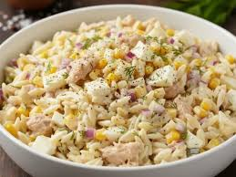
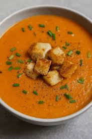
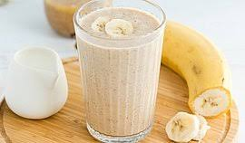
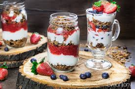

Menu dla aktywnych

Przystawka: Sałatka z tuńczykiem, jajkiem i pełnoziarnistym makaronem

Zupa: Krem z pomidorów z grzankami pełnoziarnistymi
Danie główne: Makaron pełnoziarnisty z kurczakiem i warzywami

Dodatek: Smoothie białkowe (banan, masło orzechowe, mleko, odżywka białkowa)

Deser: Jogurt naturalny z granolą i owocami